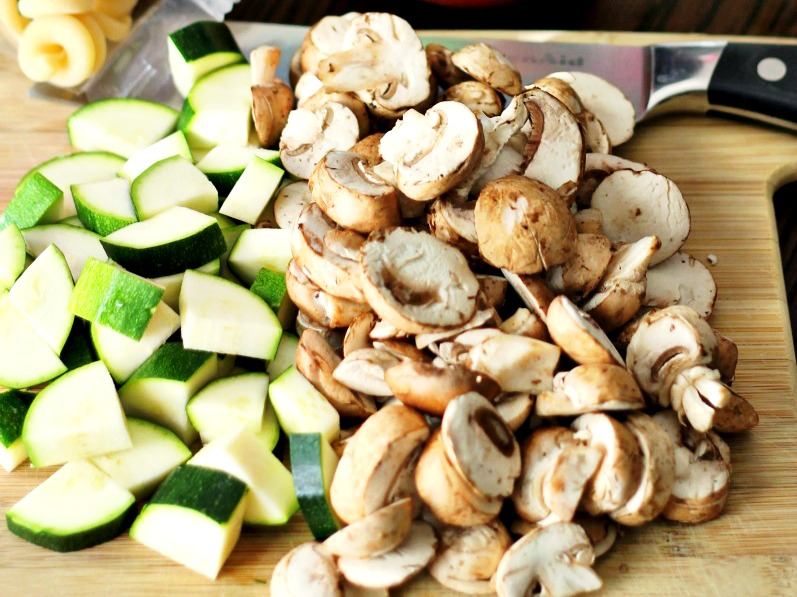

Cheesy Vegetable Pasta
This pasta recipe with vegetables and cheese is suitable for anyone (except those allergic to any of the ingredients) and for all tastes.
I like this recipe because it is relatively easy to make and it takes just an hour and a half and consists onf6 portions, but the best part is the tasting.

Ingredients:

- 2 tablespoons olive oil
- 1 tablespoon balsamic vinegar
- kosher salt
- freshly ground black pepper
- 2 medium zucchini (about 1 pound), halved lengthwise
- 1 medium eggplant (about 1 pound), halved lengthwise
- 1 large onion, peeled and quartered
- 1/2 pound ziti or penne
- 2 large cloves garlic, minced
- 1 teaspoon dried oregano
- 1/2 teaspoon dried mint
- 1 large tomato, chopped
- 4 ounces Feta cheese, crumbled (about 1/2 cup)
- 1 cup prepared tomato sauce
- 1/2 teaspoon crushed red pepper flakes
- 8 ounces mozzarella, shredded
How to Make It
- Heat the broiler. In a small bowl, whisk together 1 tablespoon of the oil with the vinegar, 1 teaspoon of the salt, and a few grinds of pepper and brush the mixture on the cut sides of the zucchini, eggplants, and onion. Arrange them cut-side up on a large, shallow baking pan. Broil the vegetables until golden brown and tender 8 to 10 minutes per side. Transfer to a cutting board. Cut the zucchini crosswise into thin slices. Cut the eggplant into 1-inch pieces. Chop the onion coarsely.🔪
- Heat the oven to 350º F. Meanwhile, in a large pot, cook the pasta according to the package directions; drain. Return the pasta pot to the stove, add the garlic and the remaining tablespoon of oil, and cook over low heat until the garlic sizzles. Stir in the oregano and mint.🥄
- Add the cooked pasta, broiled vegetables, chopped tomatoes, Feta, the tomato sauce, pepper flakes, remaining 1/2 teaspoon salt and a few more grinds of pepper. Transfer to a 13-by-9-inch baking dish. Sprinkle the top with the mozzarella.🍲
- Bake, covered, for 30 minutes. Uncover and bake for 15 to 20 minutes more or until the cheese is melted and golden, and a knife inserted in the center for 5 seconds comes out hot.🥘
- Enjoy what you cooked!😋